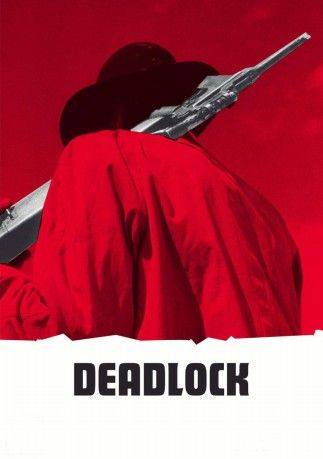

#3535 Deadlock
 
 IMDB-Wertung: 6.8 / 10
IMDB-Wertung: 6.8 / 10  Metascore: 0
Metascore: 0 
Charles Dump lebt mit seiner Tochter in einem verlassenen Kaff in der mexikanischen Sierra. Eines Tages gabelt er den erschöpften Verbrecher Kid auf, der die Beute eines Bankraubs im Gepäck hat. Dump beginnt sich für das Geld zu interessieren, doch seine Aussichten verschlechtern sich, als mit Sunshine der Organisator des Bankraubs eintrifft. Trotzdem versucht Dump weiterhin, sich das Geld unter den Nagel zu reißen, was zu einem unerbittlichen Katz-und-Maus-Spiel führt.
Jahr: 1970
Dauer: 88 Minuten
FSK: 18
Land: West-Deutschland Studio: Cinerama Filmgesellschaft MBHTonspuren:
Untertitel:
Auflösung: 720p (1280x720) Größe: 2498 MB
Genre: Thriller, Western
Regisseur: Roland Klick
Drehbuch: Steven Soderbergh
Soundtrack:
Darsteller:
 Anthony Dawson als Anthony Sunshine, der alte Killer
Anthony Dawson als Anthony Sunshine, der alte Killer- Mascha Rabben als Jessy, das Mädchen
 Mario Adorf als Charles Dump, die Ratte
Mario Adorf als Charles Dump, die Ratte Marquard Bohm als Kid, der junge Killer
Marquard Bohm als Kid, der junge Killer- Siegurd Fitzek als Enzo, der elende Schnüffler
- Betty Segal als Corinna, die abgetakelte Schachtel
 Arnold Marquis als Sunshine , uncredited
Arnold Marquis als Sunshine , uncredited
Datei: X:\FSK18-Western\Deadlock (1970, FSK18, 1280x720).mkv seit 27.04.2016
Festplatte: FSK18
 Es gibt insgesamt 25 Filme in der Gruppe 'FSK18-Western'
Es gibt insgesamt 25 Filme in der Gruppe 'FSK18-Western'